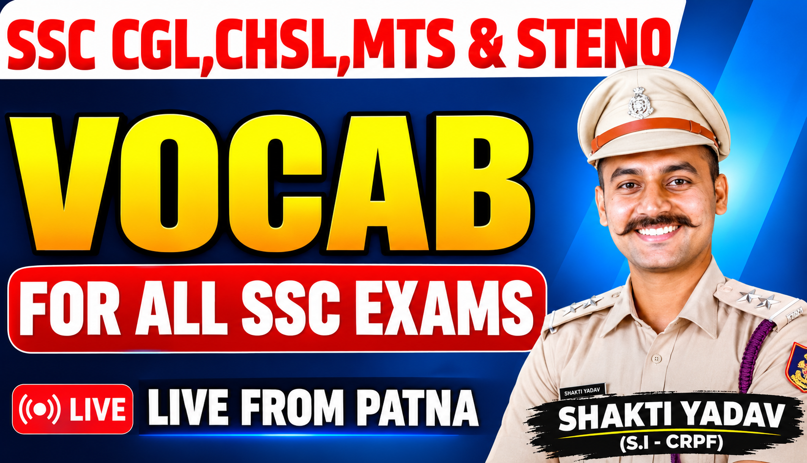
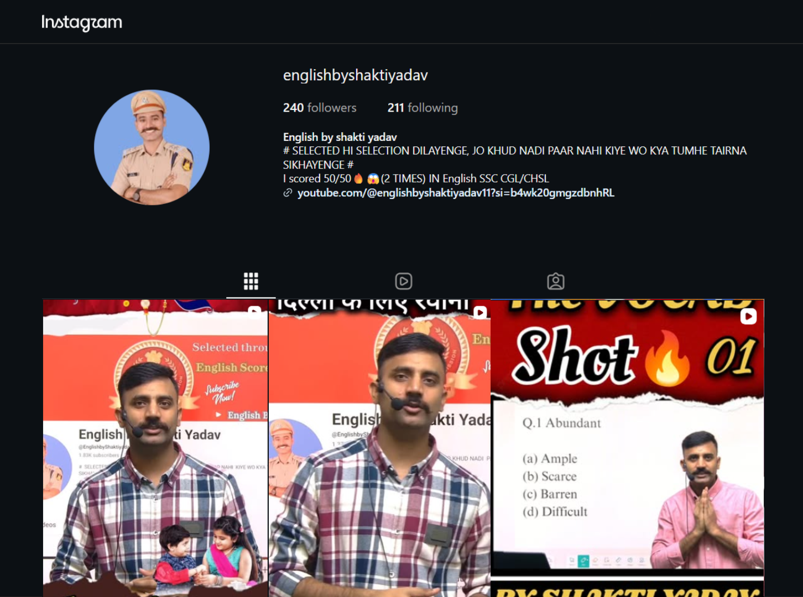
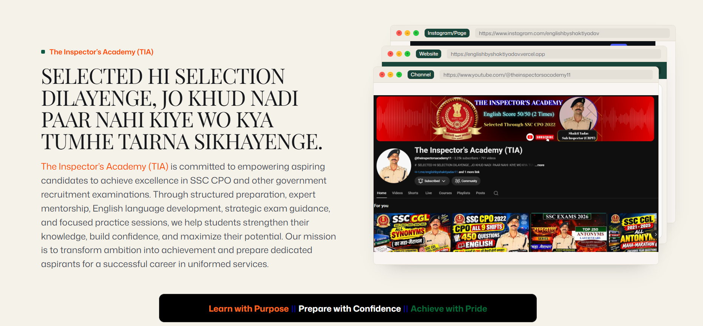
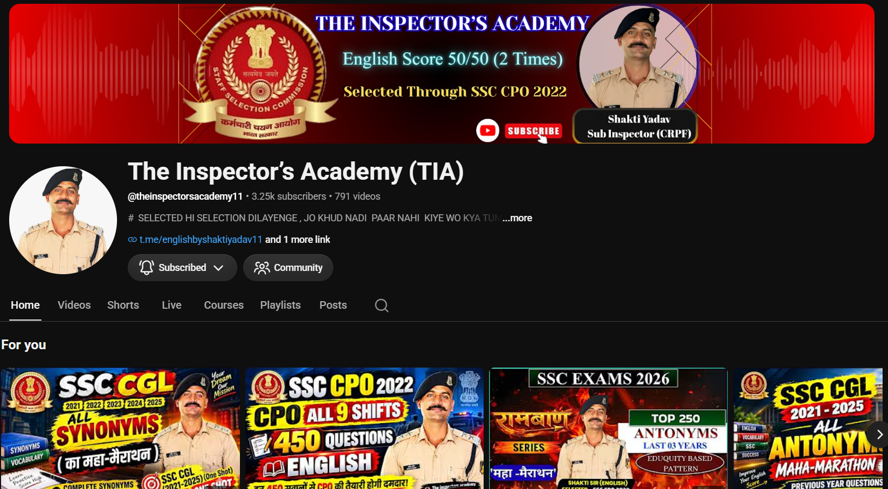
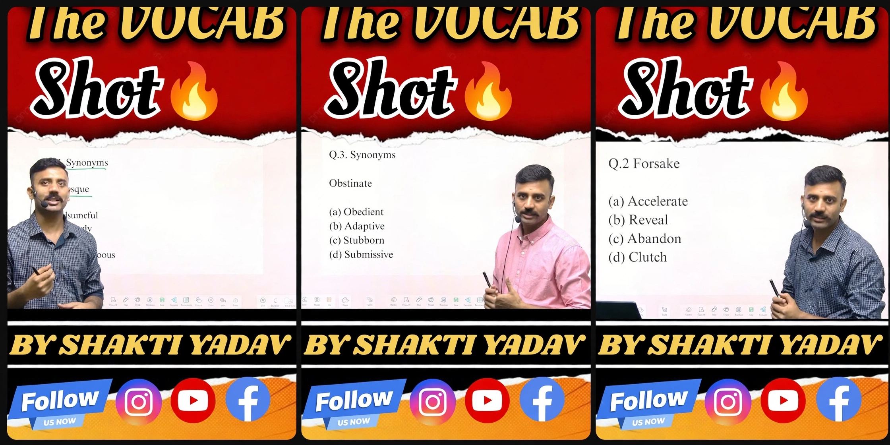
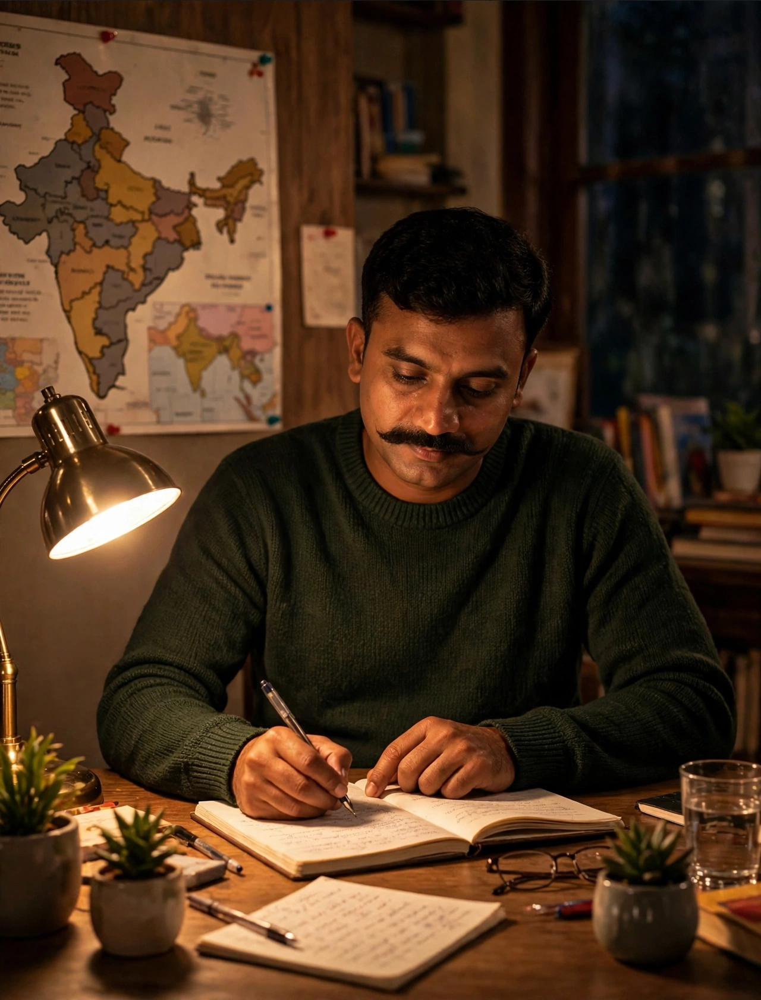

⭐FeaturedThe Inspector’s Academy (TIA)
SELECTED HI SELECTION DILAYENGE, JO KHUD NADI PAAR NAHI KIYE WO KYA TUMHE TAIRNA SIKHAYENGE.
The Inspector’s Academy (TIA) is committed to empowering aspiring candidates to achieve excellence in SSC CPO and other government recruitment examinations. Through structured preparation, expert mentorship, English language development, strategic exam guidance, and focused practice sessions, we help students strengthen their knowledge, build confidence, and maximize their potential. Our mission is to transform ambition into achievement and prepare dedicated aspirants for a successful career in uniformed services.



Learn with Purpose
||
Prepare with Confidence
||
Achieve with Pride
Explore Our Featured Playlists.
Discover carefully organized vocabulary lessons, important synonyms and antonyms, and exam-focused practice to help you prepare for all SSC exams.
🎯 Choose a playlist, explore the lessons, and start improving your vocabulary for SSC exams.
Explore our other playlists, practice important words, and strengthen your English for SSC exams.
Explore All Playlists
🆕Latest ClassesAbout Me
Shakti Yadav
English Educator & Ex-CRPF Sub-Inspector
English, made simple.
Clear classes for SSC, Police and CRPF aspirants, taught by someone who has cleared these exams himself.
- Concept-Based Learning
- Mock Tests
- Previous Year Questions (PYQs)
- Daily Practice Sets
- Hindi Medium Explanation
- Exam Strategy & Preparation for All SSC Exams
I am Shakti Yadav, a former Sub-Inspector in the Central Reserve Police Force (CRPF), where I served as a section commander. That role taught me discipline, leadership and clear decision-making under pressure. It also taught me how to guide a team toward a shared goal, and I bring the same values to everything I do today.
Alongside my service, I built a strong record in India’s competitive exams. I have qualified for CPO SI, SSC Stenographer (Grades C and D), CRPF ASI/HCM, Delhi Police HCM and SSC CGL. I have scored full marks in the English section of several of them, including 50/50 in SSC CGL 2024 and SSC CHSL 2023, and 25/25 in CRPF ASI/HCM and Delhi Police HCM. This experience gave me a practical understanding of exam patterns, time management and smart preparation.
Today, I teach English online through my YouTube channel, The Inspector’s Academy (TIA). I help aspirants strengthen their vocabulary, grammar, reading comprehension and exam strategy, with simple explanations and proven techniques. My goal is to help every learner prepare with clarity and confidence, and to turn their government job dream into a result.
My Journey
From Serving the Nation to Shaping Futures
A Journey of Discipline, Dedication & Education
My journey combines competitive-exam preparation, service in the CRPF, and a passion for helping SSC aspirants master English. These milestones are — based on my qualifications and experience.

01A clear goal: competitive exams
Preparation for recruitment examinations taught me the value of consistency, focused practice and understanding the exam pattern.
02
Qualified CPO SI in 2022
This milestone was part of a wider record of qualifying competitive examinations, including SSC Stenographer, CRPF ASI/HCM, Delhi Police HCM and SSC CGL.
03
English became my strength
My reported English marks include 50/50 in SSC CGL 2024 and SSC CHSL 2023, plus 25/25 in CRPF ASI/HCM 2023 and Delhi Police HCM 2022.
04
Service in the CRPF
From 2023 to 2025, I served as a Sub-Ordinate Officer and section commander. The role strengthened my discipline, leadership and decision-making.
05
Sharing practical exam strategies
I focus on vocabulary, grammar, reading comprehension, sentence formation, time allocation and prioritisation—skills that matter during exam preparation.
Live classes
Experience our classes, live. with Shakti Sir.
Join our live classes for SSC exams. Preview a class here and watch the full session on YouTube.
SSC Preparation FAQs
Your questions, answered.
According to the provided profile, qualifications include CPO SI 2022, SSC Stenographer 2022 (Grades C and D), CRPF ASI/HCM 2023, Delhi Police HCM 2022 and SSC CGL 2022.
The profile lists 50/50 in SSC CGL 2024 and SSC CHSL 2023. It also lists 25/25 in CRPF ASI/HCM 2023 and Delhi Police HCM 2022.
Build vocabulary daily, revise grammar and sentence formation, and practise reading comprehension. Regular practice helps improve accuracy and confidence.
Use a steady routine: practise English regularly, solve reasoning questions consistently, work on quantitative aptitude shortcuts and keep up with static GK, newspapers and current affairs.
No. The academy’s class themes can include vocabulary, grammar, idioms and phrases, reading comprehension and exam-focused English practice. Check the channel playlists for available lessons.
Visit The Inspector’s Academy on YouTube to browse available classes and playlists: The Inspector’s Academy.